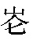
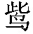

汝珍兄：
十月十二日信收到，甚喜。译致 E君函及木耳，早收到了，我竟未通知，可谓健忘，近来记性，竟大不如前，作文也常感枯涩，真令人气恼。
它兄译作，下卷亦已校完，准备付印，此卷皆曾经印过的作品，为诗，戏曲，小说等，预计本年必可印成，作一结束。此次所印，本系纪念本，俟卖去大半后，便拟将纸版付与别的书店，用报纸印普及本，而删去上卷字样；因为下卷中物，有些系卖了稿子，不能印普及本的。这样，或者就以上卷算是《述林》全部，而事实，也惟上卷较为重要，下卷就较“杂”了。
农往青岛，我方以为也许较好，而不料又受人气，中国虽大，真是无处走。
闸北似曾吃紧，迁居者二三万人，我未受影响，其实情形也并不如传说或报章之甚，故寓中一切如常。我本想搬一空气较好之地，冀于病体有益，而近来离闸北稍远之处，房价皆大涨，倒反而只好停止了。但我看这种紧张情形，此后必时时要有，为宁静计，实不如迁居，拟于谣言较少时再找房子耳。
我病医疗多日，打针与服药并行，十日前均停止，以观结果，而不料竟又发热，盖有在肺尖之结核一处，尚在活动也。日内当又开手疗治之。此病虽纠缠，但在我之年龄，已不危险，终当有痊可之一日，请勿念为要。
兄之小说集[381]，已在排印，二十以前可校了，但书名尚未得佳者。
此地文坛，依然乌烟瘴气，想乘这次风潮，成名立业者多，故清涤甚难。《文学》由王统照编后，销数大减，近已跌至五千，此后如何，殊不可测。《作家》约八千，《译文》六千，新近出一《中流》（已寄上三本），并无背景，亦六千。《光明》[382]系自以为“国防文学”家所为，据云八千，恐不确；《文学界》亦他们一伙，则不到三千也。
余后谈，此布，即请
刻安。
弟豫 上 十月十七日
[1] 陈君 指陈蜕，原名邹素寒（1909—1959），又名邹鲁风，辽宁辽阳人。当时以北平学联代表的身份，化名陈蜕，到上海参加全国学联的筹备工作，经曹靖华介绍认识鲁迅。
[2] 新月博士 指胡适。他于1927年得美国哥伦比亚大学哲学博士学位。
[3] 指尚佩秋、曹靖华合译的《远方》，中篇小说，苏联盖达尔（1904—1941）著，叶尔穆拉耶夫绘图，后载《译文》新一卷第一期（1936年3月）。
[5] 布尔乔亚 法文bourgeoisie（资产阶级）的音译。
[6] 英译本《子夜》 当时史沫特莱请人将《子夜》译成英文，拟寄往美国出版，后因抗日战争爆发，未成。
[7] “补白”两则 指《文人比较学》和《大小奇迹》，后收入《且介亭杂文末编》。
[8] 《海燕》 文学月刊，1936年1月在上海创刊，署史青文编辑，第二号改署耳耶编辑，仅出两期即被国民党禁止。
[10] 《每周文学》 《时事新报》副刊之一，1935年9月15日创刊，王淑明、徐懋庸等编辑。
[12] 旧杂文 指《花边文学》、《且介亭杂文》、《且介亭杂文二集》。
[13] 野容、田汉的两篇化名文章 参看350207①信及其有关注。野容，即廖沫沙。
[14] 戈君 指戈宝权（1913—2000），江苏东台人，翻译家。当时在莫斯科任天津《大公报》驻苏记者。“赠书”指《果戈理画传》，苏联尼古拉耶夫作，1934年列宁格勒市作家协会出版部出版。
[17] 《社会日报》 参看351029③信注〔3〕。它的第三版为《十字街头》，辟有“艺坛情报”、“艺人腻事”专栏。当时该版曾连续发表《鲁迅与文学失和》（1935年11月29日）、《文学起内哄》（12月16日）、《译文于焉停刊》（12月26日）等文，后文曾说：“茅盾……和傅东华商量”，“设法破坏《译文》”。
[18] China Today 《现代中国》，英文月刊，美国的中国人民之友协会主办，1934年1月创刊于纽约，1936年10月停刊。该刊于1935年11月号到1936年1月号，曾连载王际真翻译的《阿Q正传》。
[22] 立波大作 周立波（1908—1979），原名周绍仪，湖南益阳人，作家，“左联”成员。他在《读书生活》第三卷第五期（1936年1月）发表的《一九三五年中国文坛的回顾》中说：“林语堂先生在《宇宙风》出版的时候，曾经宣告改变了作风。作风确也变了些，然而，由闲逸的幽默变为任性的情趣，相差还是不多的。以林先生的能力，实在应当替受难的中华民族多做点事。”又说：“《星火》上还有苏汶先生的委婉的理论。苏汶先生的态度是比较好的。”
[23] 何家槐作 何家槐，参看360424①信。这里指他所作《恭贺文化界的“新年”》。该文说，“最近在救国运动中成立了一个上海文化界救国协会”是“很有意义的事情”；“爱说‘幽默’的林语堂，也非常愤愤于现今的‘无脊梁外交’，说他家里的‘老妈子亦能为之’。可见，凡是不愿当亡国奴的作家，学者，名流，知识分子，实业家，这次大联合是没有一个人会不同情的。”
[26] 南京中央狱邮片 即1月5日寄自南京中央军监的署名寿昌的明信片。受函者及其地址均被涂没，转寄者不可考。信中说：“前请表兄代转一信与卢君（按指鲁迅），计已达到。兹接双林来信，言彼曾收到卢氏短函数通，但觉‘藏头露尾’，语意含糊，一若彼处有什么新鲜事件发生者。此事如与弟无关则已，倘少涉及我时，却又是一桩麻烦事。话虽如此，我对此事倒极感兴趣。惟内中细情不甚明了，未便深猜妄断，故敢再烦表兄代达卢君：倘若他那里最近有什么事体发生，无论事之轻重大小，凡涉及我的部分，一任卢君详度情形，全权处理，弟无不欣然受命……”
[31] 丈量家屋 当时北平警察局曾去西三条胡同鲁迅家丈量住房面积。
[36] 请愿 指上海学生声援北平学生一二·九运动的请愿。参看351221③信及其注〔2〕。
[38] 删文事件 周文在《文学》月刊第五卷第六期（1935年12月）发表的短篇小说《山坡上》，曾被《文学》编辑傅东华所删。周文为此抗议的信，载《文学》第六卷第一期（1936年1月）。

（1912—1991），安徽合肥人。“左联”成员，当时任良友图书印刷公司的美术编辑。[40] 宋琳（1887—1952） 字子佩，又作紫佩，浙江绍兴人。鲁迅在浙江两级师范学堂任教时的学生，辛亥革命后在京师图书馆分馆任职。鲁迅离京后，曾托他料理北京的家务。
[41] 《企鹅岛》 长篇小说，法国法朗士著。这里指黎烈文的译本，1935年9月商务印书馆出版。
[42] 服尔德（Voltaire，1694—1778） 通译伏尔泰，法国启蒙思想家、作家。曾任法兰西学院院士。著有《哲学通信》、史诗《亨利亚德》、哲理小说《老实人》等。
[45] 指《远方》原文，当时曹靖华印发给学生作外语学习参考。
[46] Agin 阿庚（А.А.Агин，1817—1875），俄国画家。
[47] 找人枪替的材料 参看360105②信。科举时代代人考试叫“枪替”。
[54] 巴金（1904—2005） 原名李尧棠，字芾甘，四川成都人，作家、翻译家。当时在上海主持文化生活出版社编辑事务。著有长篇小说《家》、《春》、《秋》等。
[56] 伍蠡甫（1900—1992） 广东新会人，翻译家。当时任复旦大学教授兼黎明书局编辑。他的“文半篇”，指发表于1936年2月6日上海《申报·出版界》的《写作与出版（上）》。该文涉及到鲁迅所译纪德的《描写自己》（载《译文》一卷二期），认为纪德是“转型文人一类”，不适宜“一味地介绍他”；同时还就鲁迅在《题未定草（七）》中所表现的观点提出异议，非难当时“新”的批评家“硬把什么‘前进’，‘落后’等等加在某某作家之上”。
[57] 指黎明书局翻译出版的希特勒的《我的奋斗》及其他宣传法西斯的书籍。
[58] 指黎明书局曾与黄源接洽出版复刊的《译文》事。按《译文》于1936年3月复刊，由上海杂志公司出版。
[61] 黄苹荪（1908—1993） 浙江杭州人，曾任浙江省教育厅助理编审、《中央日报》特派驻杭州记者。1935年春编辑《越风》半月刊。
[63] “会稽乃报仇雪耻之乡” 这是明末文人王思任的话。弘光元年（1645）清兵破南京，明朝宰相马士英逃往浙江，王思任曾在骂他的信中说：“叛兵至则束手无措，强敌来则缩颈先逃……且欲求奔吾越，夫越乃报仇雪耻之国，非藏垢纳污之地也。”
[64] 指《记苏联版画展览会》，后收入《且介亭杂文末编》。
[65] 作家协会 指“左联”解散后，在上海的部分文艺工作者筹备组织的文艺团体。后改名为中国文艺家协会，于1936年6月7日正式成立。
[66] 白戈 即任白戈（1906—1986），笔名宇文宙，四川南充人。当时受“左联”东京分盟委派回国了解“左联”解散的情况。
[67] 阮善先 又名长连，浙江绍兴人，鲁迅的姨表侄。当时在北平求学。
[68] 《自命不凡》 据收信人回忆，这是他学写的一篇杂文，意在讽刺一些提倡“国粹”而又崇尚洋货的人。因投稿未登而寄请鲁迅指正。
[69] 甘地（M.Gandhi，1869—1948） 印度民族独立运动的领袖。长期领导对英“不合作运动”。后在教派纠纷中被刺杀。
[74] 山本君 即山本实彦（1885—1952），日本改造社创办人、社长。当时来华与鲁迅等商谈中日文化交流事。
[75] 《铁马版画》 木刻画刊，铁马社出版，共出三期。铁马社，郑野夫、江丰、程沃渣创办的木刻团体，1935年下半年成立于上海。
[77] 苏联版画展览会 上海中苏文化协会、苏联对外文化协会和中国文艺社共同举办，1936年2月20日至26日在上海青年会展出。
[79] 《铸剑》的出典 即眉间尺的传说。在相传为魏曹丕所著的《列异传》以及晋干宝所著的《搜神记》等古籍中都有记载。
[80] 邱先生 指邱韵铎（1907—1992），上海人。曾任创造社出版部主任，当时任光明书局编辑。他的批评，指《〈海燕〉读后记》，载1936年2月11日《时事新报·每周文学》第二十一期。文中说读了鲁迅的《出关》之后，“留在脑海里的影子，就只是一个全身心都浸淫着孤独感的老人的身影。我真切地感觉着读者是会堕入孤独和悲哀去，跟着我们的作者”。鲁迅在《且介亭杂文末编·“出关”的“关”》中，对此进行了批评。
[82] 指托胡风写的有关茅盾的材料和要萧军写的有关东北义勇军的文章。分别参看360105②信和360223信及其注〔1〕。
[84] 《竖琴》前记被删事，参看341210②信注〔2〕。
[85] 杜重远（1899—1943） 吉林怀德人。1934年在上海创办并主编《新生》周刊。《新生》事件，参看350627信注〔5〕。
[86] 即《野草·题辞》。它被删的事，参看351123信注〔2〕。
[87] 当指瞿秋白译的《高尔基创作选集》和《高尔基论文选集》，收入《海上述林》，当时正在编印。
[88] 陈光尧（1906—1972） 陕西城固人。曾任北平研究院助理员，长期从事语言、文字研究工作。
[89] 指有关《海燕》出版发行的事。《海燕》第一期未署发行人，遭到主管当局的干涉，因此第二期出版时，编者征得曹聚仁的同意，印上“发行人曹聚仁”。该刊出版后，曹怕承担责任，即在1936年2月22日《申报》登出《曹聚仁否认海燕发行人启事》。
[90] 指《〈故事新编〉读后感》，署岑伯作，载1936年2月18日《时事新报·每周文学》第二十二期。文中说《故事新编》所写的“其实都是现代的事故”，“鲁迅先生十分无情地画出了”“近时的学者文士们”的“丑恶的脸谱”，又说：“《出关》中的老子之为鲁迅先生的自况，也是很明显的”，鲁迅“似乎是被他所见的丑恶刺激得多悲观了，所以他的性格仿佛日益变得孤僻起来，这孤僻，竟至使有些热情的青年误会他是变得消极了”。
[92] 指《“海燕”》，宗珏作，载1936年2月7日天津《大公报·文艺》第八十九期“书报简评”栏。文中说：《出关》“虽然是历史题材，但是运用新的观点，针对着某角落的现象，在大众的面前揭露出一些曾经使许多人迷信的偶像的原形，还是极有意义的”。
[94] 指萧军为英文刊物《中国呼声》撰写的《东北义勇军》，后载该刊第一卷第六期（1936年6月1日）。
[96] 《海燕》已以重罪被禁止 1936年2月29日，国民党中央宣传部查禁《海燕》，罪名是：“一、抨击本党外交政策；二、宣传普罗文化；三、鼓吹人民政府”等。
[97] 同被禁止者有二十余种 1936年1、2月间国民党中央宣传部接连以种种藉口查禁《海燕》、《大众生活》、《生活知识》、《读书生活》、《漫画和生活》等杂志二十三种。
[99] 靖节 即陶渊明，参看290106信注〔10〕。《晋书·陶潜传》说他“不营生业，家务悉委之儿仆。”
[100] 《门外文谈》 叶籁士、尹庚等编，收鲁迅《门外文谈》等有关语文改革的文章五篇，1935年9月上海天马书店出版。
[102] 关于天马书店改组的事。1933年天马书店编辑楼适夷被捕，主持日常工作的楼炜春离去，1935年经理韩振业去世，该店遂停业。1936年初，郭静唐接办，恢复营业。
[104] 《复刊词》稿等三种 指《〈译文〉复刊词》，《死魂灵》第二部（一）及其《译后附记》，均载《译文》新一卷第一期（1936年3月）。后者现编入《译文序跋集》。
[105] 杨晋豪（1910—1993） 字寿清，江苏奉贤（今属上海）人。当时在北新书局编辑《小学生》半月刊。
[108] 剪集的事，据收信人说明：“因见此地（南京）报纸常造先生的谣言，于是便剪了几则寄给先生看，并说以后如再看见这类文字，当随时寄上。”
[109] 即亚力克舍夫的《城与年》插图，参看340611信注〔2〕。亚历克舍夫，参看350126信注〔9〕。
[110] 此信据1936年5月1日汉口《西北风》半月刊第一期编入。
[111] 涵之 即齐涵之，史济行的化名。参看290221信注〔1〕。
[112] 指《白莽作〈孩儿塔〉序》，后收入《且介亭杂文末编》。按这篇文章是史济行骗请鲁迅作的，参看《且介亭杂文末编·续记》。
[114] 《推背集》 杂文集，唐弢著，1936年3月上海天马书店出版。
[115] 此信上、下款系收信人裁去。欧阳山（1908—2000），原名杨凤歧，笔名罗西，湖北荆州人，作家。草明（1913—2002），原名吴绚文，广东顺德人，女作家。都是“左联”成员，当时在上海从事文学创作。
[118] 曹白 本名刘萍若，江苏武进人。木铃木刻社发起人之一。1933年10月在杭州国立艺术专门学校因从事木刻被国民党当局逮捕下狱，次年年底出狱。当时在上海新亚中学任教。
[119] 指《鲁迅像》。该画原拟参加1935年10月在上海举办的第一次全国木刻联合展览会，后被国民党上海市党部检查官禁止展出。鲁迅曾在像旁题辞，参看《集外集拾遗补编·题曹白所刻像》。
[120] 许粤华 笔名雨田，女，浙江海盐人，翻译工作者。当时在日本留学。
[121] 《世界文学全集》 指《世界文学全集》第三十一卷，日本新潮社出版。
[122] 霍氏 指霍普特曼（G.Hauptmann，1862—1946），德国剧作家。著有剧本《织工》等多种。
[123] 指德国珂勒惠支的连续铜版画《织工暴动》，共六幅，后由鲁迅收入《凯绥·珂勒惠支版画选集》。
[124] 《昆虫记》 法国昆虫学家法布耳（1825—1915）著。
[125] 指《作家》目录。该刊第一卷第一期至第六期的目录顶端都刊有世界著名作家的头像，其中包括鲁迅的像。
[126] 指《我的第一个师父》，后收入《且介亭杂文末编》。
[127] “略说” 指《〈城与年〉概要》，鲁迅托曹靖华作，原拟附在《〈城与年〉插图本》之后，供读者参考。参看350530①信注〔5〕。
[130] 《Поле》 《旷野》。《ЖизньСмокотинина》，《斯莫科季宁的生活》。
[131] 《木刻界》 广州现代版画会为第二次全国木刻联合展览会联系作者所出的刊物，1936年4月15日创刊，7月15日出至第四期停刊。
[141] 指《烟袋》、《第四十一》。后来出版的情况，参看340224①信注〔6〕。
[142] 指苏联聂维洛夫的短篇小说《女布尔什维克玛丽亚》。
[144] Sobaka 鲁迅用英文字母拼写的俄文词（собака），意为狗、走狗、豺狼。
[145] 《导报》还引为知己 《文学导报》第一卷第一期（1936年3月）《编辑后记》中曾说：“对于一些为我们这个刊物尽宣传的力量的好心的朋友们，我们是应该特别感谢的。我们很感谢……《星火》的编者杜衡、杨邨人、韩侍桁三先生。”
[147] 《六月流火》 诗集，蒲风（1911—1943）著，1935年在日本东京自费刊印。
[148] 5·4的装饰画 指曹白为纪念五四运动十七周年所作的木刻装饰画。画面有“5·4”两字，曾作为《五四运动的历史》（陈端志著，1936年生活书店出版）一书的封面。
[149] 指曹白因刻《卢那察尔斯基像》被捕事。参看鲁迅据此所作的《写于深夜里》，后收入《且介亭杂文末编》。
[150] 杜和銮（1919—1987） 后改名草甬，安徽太平（今属黄山）人。陈佩骥，浙江人。当时均为杭州盐务中学学生，合办小型文学刊物《鸿爪》。
[151] 《鸿爪》 1936年4月创刊，仅出一期。杭州鸿爪月刊社编辑并出版。
[152] 指《苦竹杂记》（周作人著）和《爱眉小札》（徐志摩著），均属《良友文学丛书》，1936年出版。
[153] Monotype 即“独幅版画”，参看360214信。
[155] 这篇说明后由赵家璧改译，题为《苏联的版画》，印入《苏联版画集》。
[157] 颜黎民（1913—1947） 原名邦定，四川梁平人。1934年为北平宏达中学学生，1936年4月收到鲁迅的第二封复信后不久，因“共产嫌疑”被捕，半年后出狱。
[159] 《鱼的悲哀》 短篇童话，俄国爱罗先珂著，鲁迅译。载《妇女杂志》第八卷第一号（1922年1月），后收入《爱罗先珂童话集》。
[160] 所附广告剪报文为：“初编四部丛刊出让 2112册书本均新配有最富丽书柜四个愿廉价出让接洽处威海卫路583弄21号”。
[162] 译诗 指许寿裳《关于儿童》一文中引译的英国华兹华斯（W.Wordsworth）的短诗《虹》和美国诗人朗费罗（H.W.Longfellow）的短诗《儿童》，载《新苗》创刊号（1936年5月）。
[163] ××× 原件此三字被收信人涂去。据他现在追记，系“这一翼”，指“左联”。
[166] 指用日文写作的《内山完造作〈活中国的姿态〉序》和《〈中国小说史略〉日本译本序》等。
[167] 盛成（1899—1996） 江苏仪征人，旅居法国多年，曾用法文著有《我的母亲》及诗集数种。
[168] “略记” 指《坐牢略记》，人凡（曹白）作。后未发表，鲁迅在《写于深夜里》曾摘录部分。
[170] 《美术生活》 刊载绘画与摄影的月刊，吴朗西等编辑，1934年4月创刊，1937年9月停刊。上海美术生活社出版。
[171] 木刻四幅 即索洛威赤克的《高尔基像》，保夫理诺夫的《契诃夫像》，克拉甫兼柯的《列宁之墓》、《拜伦像》。均载《美术生活》第二十五期（1936年4月）。
[173] 《熊之生长》 应译作《小熊是怎样长成大熊的》，苏联儿童读物。《苏联版画集》曾收该书插图。
[177] 指史沫特莱的《凯绥·珂勒惠支——民众的艺术家》一文，后由茅盾译出，作为《凯绥·珂勒惠支版画选集》的序言之一。
[178] 《Dneprostroyat Night》，by A.Kravchenko 即克拉甫兼珂的《尼泊尔水闸之夜》（“尼泊尔”通译“第聂伯”），曾用作《译文》新一卷第三期（1936年5月）封面画。
[180] 《中学生》 以中学生为对象的综合性月刊，夏丏尊、叶圣陶等编辑，1930年1月在上海创刊，开明书店出版。该刊从第六十一号（1936年1月）起连载黄源所译《在人间》，第六十五号起续载封斗（楼适夷）的译本。
[181] “维止”事 《清稗类钞》第八册《狱讼类》中《查嗣庭以文字被诛》记述了查嗣庭案的各种说法，其中有一说是：“雍正丙午（1726），查嗣庭、俞鸿图典江西试……查所出题，为‘维民所止’。忌者谓维止二字，意在去雍正二字之首也，遽上闻。世宗以其怨望毁谤，谓为大不敬。”
[182] 《东华录》 清天命至雍正六朝的实录和其他文献摘抄。清代蒋良骥编纂，共三十二卷。后王先谦、朱寿朋曾作增补。
[183] 齐东野语 语出《孟子·万章（上）》：“此非君子之言，齐东野人之语也。”
[184] 指被国民党秘密杀害于上海龙华警备司令部的李伟森、柔石、胡也频、冯铿、殷夫五位“左联”作家。
[185] 《关于小孩子》 散文，高尔基作，陈节（瞿秋白）译。载《妇女生活》第二卷第一期（1936年1月）。
[187] 《Children’s Garden》 《儿童公园》，后收入《苏联版画集》。
[191] 儿岛献吉郎（1866—1931） 日本中国文学研究家，著有《中国文学概论》等。
[193] 《作家》 文学月刊，孟十还编辑，1936年4月在上海创刊，11月停刊，共出八期。上海杂志公司发行。
[194] 《死魂灵百图》 俄国阿庚绘、培尔那尔特斯基刻的《死魂灵》插图。鲁迅于1936年以三闲书屋名义翻印出版。
[195] 原件无签署，据收信人在《光明》半月刊第一卷第十号（1936年11月25日）所载之《学习鲁迅先生的精神》文末附注：“鲁迅先生的签名，不知在什么时候撕破失去了。”何家槐（1911—1969），浙江义乌人，作家。“左联”成员，作家协会（后改名文艺家协会）发起人之一。
[199] 吴朗西（1904—1992） 四川开县人，翻译工作者。当时任文化生活出版社经理。
[207] 《文丛》 即《文学丛报》，月刊，王元亨、马子华、萧今度合编，1936年4月创刊，出至第五期停刊。上海杂志公司出版。
[208] 团体 指当时上海部分文艺工作者拟成立的抗日民族统一战线团体。按该团体后未正式成立，但于1936年6月15日，由鲁迅、巴金等六十三人联名发表了《中国文艺工作者宣言》。
[209] 王统照（1898—1957） 字剑三，山东诸城人，作家。“文学研究会”发起人之一。著有长篇小说《山雨》等。
[212] 1936年夏初，北平部分文艺工作者筹备成立“北平作家协会”，拟请鲁迅为其成立大会写祝词。
[214] 《安那·卡莱尼娜》的插画 指俄国谢格洛夫（М.Щеглов）、莫拉沃夫（А.Мордов）和柯陵（А.Корин）为列夫·托尔斯泰所著《安娜·卡列尼娜》而作的油画插图。1914年莫斯科瑟京（И.Д.Снтин）出版社出版。
[216] 《The Voice of China》 即《中国呼声》，英文半月刊，美国格兰尼奇（M.Granich）编辑，1936年3月15日创刊。上海中国呼声社出版。
[217] 《夜莺》 文学月刊，方之中编辑，1936年3月创刊，出至第四期停刊。上海群众杂志公司发行。
[218] “上了镣铐的跳舞” 鲁迅在《且介亭杂文二集·后记》中说过的话，原作“带着枷锁的跳舞”。
[220] 《奔流》后记 即《〈奔流〉编校后记》，后收入《集外集》。
[221] 《展览会小引》 即《一八艺社习作展览会小引》，后收入《二心集》；《祝〈涛声〉》、《“论语一年”》，后均收入《南腔北调集》。
[223] 指《三月的租界》和《〈出关〉的“关”》，后均收入《且介亭杂文末编》。
[224] 《珂勒惠支版画选集》序二篇 即史沫特莱的《凯绥·珂勒惠支——民众的艺术家》和鲁迅的《〈凯绥·珂勒惠支版画选集〉序目》。鲁迅文后收入《且介亭杂文末编》。
[228] 指复刊《现代》杂志的事。当时杜衡、施蛰存和戴望舒三人曾计划复刊《现代》，由戴望舒出面向各地作家招股和征稿，后未成。
[229] 据收信人回忆，当时他曾建议鲁迅写一部自传或协助许广平写一部鲁迅传。
[232] 指李何林（1904—1988），安徽霍丘人，鲁迅研究工作者。曾在北京中法大学、天津南开大学等校任教。当时他从山东济南高级中学写信，提议为纪念鲁迅创作活动三十年刊印鲁迅著作。
[233] 指鲁迅拟印的“三十年集”，曾手订目录，但生前未印成。
[234] 指《城与年》木刻插画中五幅图的题句，参看360503信。
[235] 指《鲁迅杂感选集》，编者瞿秋白署名“何凝”，1933年7月上海青光书局出版。
[236] 指《关于左拉》，发表于《作家》第一卷第一期（1936年4月15日），署名何凝。
[237] 编刊物的事，据收信人回忆，当时上海今代书店拟请他和庄启东合编《今代文艺》，书店要求他们“不属于任何一面”，并表示编者采用稿件有“绝对的自由”。
[240] 时玳 原名张组文，山东文登人，当时的青年作者。后参加新四军，在作战中牺牲。
[244] 书评 指《读〈推背集〉》，罗荪作，载1936年5月3日《北平新报·绒线软语》。
[245] 据《鲁迅书简》编者注：“此信是正当鲁迅先生大病甚剧时逐字口授，由景宋写寄的。”
[246] 据《鲁迅书简》编者注：“此信是由鲁迅先生亲笔拟稿，交景宋抄寄的。”
[247] 据收信人回忆，当时在北平的金肇野等木刻工作者要他写一篇关于鲁迅病情的通讯发表，因此他写信向许广平询问（据曹白：《写在永恒的纪念中》）。
[248] 美国医生 指邓医生（Thomas.Dunn，1886—1948），美籍英国人，加利福尼亚大学医学部毕业，曾任美国海军军医，1920年来沪行医，1943年返美。
[251] 即《苏联作家二十人集》，1936年7月上海良友图书印刷公司出版。
[252] 据《鲁迅书简》编者注：“此信是由鲁迅先生口授，景宋代笔寄发的。”
[253] 《苏联版画集》 赵家璧编，收苏联版画展览会展品一百八十余幅，1936年7月良友图书印刷公司出版。
[256] 文学奖金 指当时良友图书印刷公司设置的“良友文学奖金”。
[262] 杨之华（1901—1973） 笔名文尹，浙江萧山人。瞿秋白夫人。1935年8月被派赴苏联出席共产国际第七次代表大会，会后留在苏联担任国际红色救济会常委。下文的“尹兄”即杨之华。
[264] 小英雄们 指“国防文学”倡导者，其中不少人原先是年轻的“左联”盟员。
[265] 有些“国防文学”倡导者指责鲁迅“不理解基本政策”，“破坏统一战线和文艺家协会”。
[267] 1936年7月2日，鲁迅托内山书店店员取到杨之华寄赠的礼物：石雕烟灰缸两个，苏联亚历舍夫及密德罗辛木刻集各一本。
[269] 密斯陆 指陆缀雯，王一飞烈士的夫人。1928年1月王一飞牺牲后她一度在上海银行工作，曾想通过杨之华将烈士遗孤送往苏联留学。
[270] 谢君 指谢澹如（1904—1962），江苏松江人。曾掩护瞿秋白夫妇在上海南市紫霞路六十八号和法租界毕勋路华兴坊十号避难。书店，指公道书店。
[272] 沈西苓（1904—1940） 沈学诚，笔名沈叶沉、沈西苓，浙江德清人，戏剧电影工作者。当时在上海明星影片公司任导演。
[273] 洪深（1894—1955） 字浅哉，江苏常州人，戏剧家。
[274] 此处及下句中的空字，系刊载手迹制版的《电影戏剧》编者所删。
[275] 孔先生 指孔另境。当时受沈雁冰的委托，请鲁迅为沈所主编的《中国的一日》挑选木刻插画。
[277] 指曹白为《花边文学》所作的木刻封面，画面是一把短刀、一束荆棘和用拉丁化新文字拼写的书名、作者名。后未采用。
[278] 郝先生的三幅木刻 指郝力群所作的《采叶》、《三个受难的青年》和《武装走私》。
[279] 《中国的一日》 茅盾主编，选取记叙1936年5月21日这一天全国所发生的事情中具有社会意义或能表现人生一角的文章五百篇，并木刻、漫画、摄影等插图多页，1936年9月生活书店出版。
[280] 《庶联的版画》 韦太白编，收苏联版画一〇四幅，1936年5月上海多样社出版。卷首擅将鲁迅的《记苏联版画展览会》一文列为序，题作《鲁迅：记庶联版画展览会》。
[281] 《文艺工作者宣言》 即《中国文艺工作者宣言》。载《作家》第一卷第三号（1936年6月）。
[282] 指由广州现代创作版画研究会负责筹办的中华全国木刻第二回流动展览会，自1936年8月起，先后在广州、杭州、上海等地流动展出。
[283] 郝君给我刻像 指郝力群所作木刻《鲁迅像》，后刊《作家》第二卷第一期（1936年10月）。
[285] 《苏联作家七人集》 参看340224①信注〔6〕。
[286] 《玛丽亚》 即《女布尔什维克——玛丽亚》，短篇小说，聂维洛夫作。
[291] 杨君 指杨贤江（1895—1931），字英甫，笔名李浩吾，浙江余姚人，近代教育思想家。据收信人的来信说：“前次来信谓若到日本，总要有通日语者同去，则你较为省力；鄙意倘一时无此同伴，则到日本后雇一下女，似亦可将就，因从前杨贤江夫妇在日时雇过下女，杨日语不很高明，杨夫人完全不懂，但下女似乎很灵，作手势颇能了然。”
[292] 莫干山 位于浙江省北部德清县西北，为避暑、疗养胜地。
[293] 王正朔（1907？—1939） 河南内乡人。当时在南阳一带做中共党的地下工作，曾受托为鲁迅收集南阳汉画拓片。
[295] 据收信人回忆，指他所作的长诗《进行曲》续编，及所译俄国作家冈察洛夫（И.А.Гоцаров）的长篇小说《阿波洛莫夫》（今译《奥勃洛摩夫》）前五章和德国沃尔夫（F.Wolf）的剧本《诺汉默教授》（今译《马门教授》）。
[297] 何小姐 指何昭容，参看340831①信注〔2〕。
[298] 马理 即周鞠子（1917—1976），又名晨，周建人之女。
[301] Hili 德文解剖学名词，即血管等出入的门，如肾门、肺门等。
[302] 指须藤五百三，参看360828（日）信注〔1〕。
[303] 小说座谈会 即小说家座谈会。当时欧阳山主编的《小说家》文艺杂志，为探讨小说创作组织小说家座谈，每期在“小说家座谈会”栏内刊登座谈内容。
[304] 指徐懋庸1936年8月1日致鲁迅信，鲁迅为此作《答徐懋庸并关于抗日统一战线问题》，后收入《且介亭杂文末编》。
[305] 指《社会日报》。该报在1936年8月20日、22日、24日、25日接连发表未名的《鲁老头子笔尖儿横扫五千人，但可惜还不能自圆其说》、灵犀的《读鲁迅先生关于统一战线问题应为徐懋庸先生辩白的几句话》、孙奥的《鲁迅笔下的二位西装大汉，据说就是华汉林伯修》、返秋的《鲁迅突击了韩侍桁，是不是苦肉记》等文。
[313] 《立此存照》 即《立此存照》（一）、（二），后均收入《且介亭杂文末编》。
[315] 《文学界》 月刊，署周渊编辑，实由戴平万主编，1936年6月创刊，同年9月出至第四期停刊，共出四期。上海天马书店发行。
[316] “实际解决” 此句以及这段中的其他引语，均为徐懋庸1936年8月1日致鲁迅信中的话。
[320] 徐 指徐调孚（1901—1981），名骥，字调孚，浙江平湖人，文学研究会会员。当时任开明书店编辑。
[321] 被八道湾赶出 1923年8月，鲁迅与周作人决裂，由八道湾迁居砖塔胡同。
[323] 许钦文 参看250929信注〔1〕。1929年陶元庆逝世后，他曾向陶的生前友好募款，为其在杭州西湖畔修墓。陶元庆纪念堂，系他独资营造。涉入命案的事，参看320302信注〔5〕和330820①信注〔2〕。
[325] 指曹靖华译的苏联涅维洛夫的《平常的事——一个农妇的故事》、《带羽毛的帽子》、《委员会》和左琴科的《澡堂》。
[326] 指《曹靖华译〈苏联作家七人集〉序》，后收入《且介亭杂文末编》。
[328] 病重之说 1936年8月30日《北平新报》载有署名“曾”的《鲁迅先生病况》，其中说：“鲁迅先生的病，……据说现在又加重一点了。”
[329] 关于《卡巴耶夫》的几篇文章，指《夜莺》第一卷第四期（1936年6月）“却派也夫特辑”中的《关于〈却派也夫〉》、《夏伯阳之死》和《孚尔玛诺夫与夏伯阳》。前两篇分别署吴明、明之译，后一篇署明之作。按《卡巴耶夫》、《却派也夫》，均系《夏伯阳》的不同译名。
[332] 《新传统》 文艺论文集。赵家璧著，1936年8月良友图书印刷公司出版。
[333] 指德国麦绥莱勒木刻连环画《一个人的受难》普及本，1936年良友图书印刷公司出版。
[334] 指当时《凯绥·珂勒惠支版画选集》改版重印时，在每幅画下所加的题目（初版本无画题）。
[336] 指短篇小说《爷爷为什么不吃高粱米粥》，后载《作家》第二卷第一号（1936年10月）。

鹭湖的忧郁》 短篇小说，后载《文学》第七卷第二号（1936年8月）。[339] 按《凯绥·珂勒惠支版画选集》改版重印本，于1936年10月出版，为《新艺术丛刊》第一种。
[340] 许杰（1901—1993） 浙江天台人，作家。文学研究会会员。当时在上海暨南大学文学院中文系任教。
[341] 径三 即蒋径三（1899—1936），浙江临海人。曾任中山大学图书馆馆员兼文科历史语言研究所助理员。鲁迅编纂《唐宋传奇集》时，他曾帮助代借资料。1936年7月在杭州坠马而死后，他的生前友好在杭州《晨光》周刊（1936年10月25日）刊出《蒋径三先生纪念专号》。鲁迅的纪念文章，后未写成。
[342] 指《〈全国木刻联合展览会专辑〉序》手迹刻印稿。原件及《专辑》的作品因金肇野被国民党当局逮捕而全部散失。
[344] 指《“立此存照”》（三）、《“立此存照”》（四），后均收入《且介亭杂文末编》。
[347] 指陈杏荪，浙江宁波人。当时任上海太平洋印刷所经理。
[348] 《新苗》 综合性半月刊，第五期后改为月刊。1936年5月创刊，1937年6月停刊。北平大学女子文理学院出版委员会编辑出版。这里说的“兄所为文”，指该刊第八期（1936年9月）所载的《纪念先师章太炎先生》。该文述及章太炎1906年在东京留学生欢迎会上的演说，在节引其中“用宗教发起信心，增进国民的道德”，“用国粹激动种族，增进爱国的热肠”一段之后，便说：“现在中国虽称民国，而外侮益亟，民气益衰，一般国民之怯懦浮华，猥贱诈伪，视清末或且加甚，自非一面提倡佛教，‘以勇猛无畏治怯懦心，以头陀净行治浮华心，以惟我独尊治猥贱心，以力戒诳语治诈伪心’（先师答梦庵书中语，见《民报》第二十一号）。一面尊重历史，整理国故，……前路茫茫，何能有济？”
[349] 太炎先生狱中诗 1903年6月章太炎与邹容在上海被清政府逮捕，章在狱中作有《狱中赠邹容》、《狱中闻沈禹希见杀》、《狱中闻湘人杨度被捕有感二首》等诗。
[350] “速死” 1915年章太炎被袁世凯软禁于北京期间，因愤于袁世凯阴谋称帝，以七尺宣纸篆书“速死”二字，悬于壁上。并自跋云：“含识之类，动止则息，苟念念趣死，死则自至，故书此二字，在自观省，不必为士燮之祷也。乙卯孟秋，章炳麟识。”“速死”是春秋时范文子（即士燮）的故事。《左传》成公十七年载：范文子是晋国大夫，曾佐郤克、栾书等率军与齐、秦、楚作战，屡胜建功。因晋厉公骄侈成性，他担心自己会因功招祸，殃及家族，便祈祷“速死”，不再作战。他“祝宗祈死”，说：“爱我者唯祝我使我速死，无及于难，范氏之福也。”
[351] 《汉郊祀歌》 汉乐府歌辞，共十九章。章太炎所作篆书，未详。
[354] 木刻展览会 参看360807①信注〔1〕。该会于1936年10月6日至8日在上海八仙桥青年会展出，鲁迅曾于8日抱病前往参观。
[355] 《儿童专刊》 《申报》副刊之一，每逢星期一出版。1936年9月27日，该刊载有《小学生们应有的认识》，作者署名梦苏。
[356] 《存照》 指《“立此存照”》（五），收入《且介亭杂文末编》时，改题为《“立此存照”》（七）。
[357] J.Prušek 即普实克，参看360723（捷）信注〔1〕。
[358] 指曹白的论文《略谈现在中国的绘画》和散文《夜谈》。前篇载《中流》第一卷第八期（1936年12月），后篇未发表。
[359] 耿 指耿济之。下文的傅，指傅东华。吴，指吴文祺（1901—1991），浙江海宁人，时为暨南大学中文系教授。
[360] 章 指章锡琛。叶，指叶圣陶。徐，指徐调孚。宋，指宋云彬（1897—1979），浙江海宁人，当时开明书店编辑。夏，指夏丏尊。
[361] 王 指王伯祥（1890—1975），名钟麒，号伯祥，江苏吴县人，当时开明书店编辑。丁，指丁孝先，江苏苏州人，当时开明书店编辑。
[362] “顾问” 《文学》月刊1936年7月改由王统照编辑后，拟请鲁迅担任顾问。
[364] 《冰天雪地》 苏联影片，描写苏联青年向北极进军的事迹。
[366] 《写实主义文学论》 指《海上述林》上卷《现实》中的第一篇《马克思恩格斯和文学上的现实主义》一文。
[368] 费明君（1912—1975） 浙江宁波人。曾任汉口《平报》、南京《新京日报》文艺副刊编辑，当时在日本留学。
[369] 此处及下文的删节处，为《鲁迅先生语录》（雷白文编，1937年10月自印）刊载手迹时被同时刊登的鲁迅照片所盖没。
[370] 指《绍介〈海上述林〉上卷》，现编入《集外集拾遗补编》。
[371] 指《绍介〈海上述林〉上卷》。下文“尚有一种”，指联华书局有关鲁迅等人九种著译的广告。均载《中流》半月刊第一卷第四期（1936年10月20日）。
[372] 《复仇艳遇》 苏联影片，据普希金的小说《杜波罗夫斯基》改编。
[373] 即联华书局有关鲁迅等人九种著译的广告，载《译文》新二卷第二期（1936年10月）。
[374] 《农书》 元代王祯著。鲁迅所藏为二十二卷，十册，分农桑通诀、农器图谱、谷谱三类。清乾隆三十九年（1774）内聚珍本。
[375] 指《旧都文物略》。北平市政府秘书处编，1935年北平市政府印行。
[376] 公谟学院 即共产主义学院（Коммунистическая Академиа），1918年成立，为苏联建国初期的最高学术科研机构，有院士一百余人，初名为社会主义社会科学院，1924年改称共产主义科学院。1936年以它为核心组建苏联科学院。
[377] 指《〈海上述林〉上卷插图正误》，现编入《集外集拾遗补编》。
[378] 指陆离，江苏太仓人。木铃木刻社成员。当时在南京任中学教员。
[379] 指鲁迅所作《论现在我们的文学运动》、《答徐懋庸并关于抗日统一战线问题》和《半夏小集》等文，后均收入《且介亭杂文末编》。
[380] 指鲁迅、郑振铎、陈望道、胡愈之和叶圣陶等。《海上述林》系由他们集资刊印。
[382] 《光明》 文学半月刊，洪深、沈起予编辑，1936年6月创刊，1937年8月出至第三卷第五号停刊。生活书店出版。
注 释
[381] 指《苏联作家七人集》。
[382] 《光明》 文学半月刊，洪深、沈起予编辑，1936年6月创刊，1937年8月出至第三卷第五号停刊。生活书店出版。